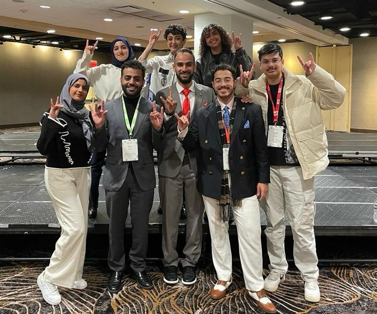
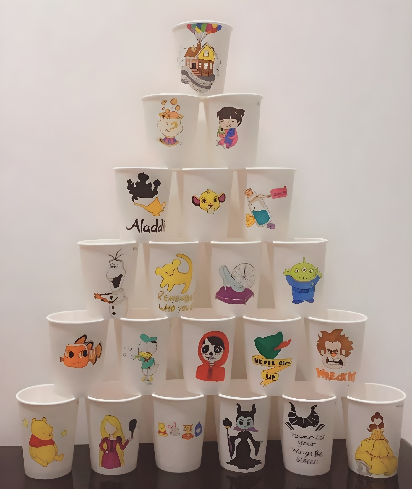

Background Information
I'm an international student studying at University of Pittsburgh. Studying abroad has always been my dream and I feel so grateful for this opportinity! I worked really hard in high school to achive my goal. Luckily, I was granted the most prestigious scholarship in my country!
I took a gap year and studied in North Carolina State University. It was a unique experience where I got to meet a lot of cool people and make new friends. It was also an opportinity to do bad in university without worrying about grades. It was the perfect send off for our new adventure!

My Major
I study Computer Science. I chose my major because of my passion in coding. I was drawn to coding from movies and tv series and despite what many people say, coding gives the same vibes you see in movies! Another reason for choosing my major was my video games addiction. I love learning about the process behind making a video game and creating the illistrations and character's movements.
My Encomium
3D Animation
Imagine stepping into a fantastical world where the boundaries between reality and imagination blur into an immersive experience where every little detail feels tangibly real. This is the transformative power of 3D Animation and virtual reality, which have redefined the limits of creative expression and immersive engagement. 3D Animation, also known as three-dimensional design, is the process of creating a three-dimensional digital model of an object using three main axes: the horizontal axis (X), the vertical axis (Y), and the depth axis (Z). By manipulating these axes, designers can create intricate, lifelike models that simulate depth and perspective. This process relies on various design programs like Blender, Maya, or 3ds Max to build and animate these models. The goal is to convey ideas with a high degree of realism, enhancing both artistic expression and functional design in digital products. 3D Animation is one of the greatest technological innovations that have transformed creativity, artistic storytelling, and interactive technology, ultimately helping reshape various industries and expanding opportunities for engagement and learning.
The evolution from 2D to 3D animation marks a remarkable journey in the history of virtual storytelling. Originally, animation was confined to a two-dimensional realm where artists had to draw frame-by-frame sequences to create movements and expressions. Obviously, this process was not only time consuming but also limited the possibilities of creativity because of the massive effort put into making a short scene. When talking about magical world many people think of Disneyland as Disney has -from its earliest- set the ground to be the most inspirational company. They have always focused on breaking our thinking limitations making us believe in our dream world’s becoming true. Therefore Disney has released the first computer-animated film, Toy Story, which became a huge turning point in the animation industry. This film utilized Modern CGI (Computer-Generated Imagery) techniques. According to the New York Film Academy, “The film transformed the animation industry, showcasing the possibilities of computer animation and influencing the direction of future developments in the field of animated filmmaking.” After all these years Toy Story film remains a true animation masterpiece that have inspired many future movies.
Moreover, 3D animation transforms how people visualize the world because it provides a realistic immersive viewing experience, that makes the displayed images appear real and present in front of the person. As opposed to two-dimensional animation, 3D animation simulates depth, lighting, and texture, allowing viewers to interact with and explore complex environments tangibly and immediately. 3D animation had a great influence on expanding our creative thinking and problem-solving skills. As video games players, our biggest dream is to live inside a video game, which 3D animation made possible. Players can now see the character’s points of view and the depth of the scene making it feel like they are inside the game. This makes players more connected and emotionally invested in stories because of the interactive storytelling techniques.
One of the outstanding uses of 3D Animation is creating three-dimensional video games. Players can also be equipped with 3D glasses known as VR (Virtual Reality headsets). These glasses have look through lenses that display one or more screens that display stereoscopic images. The VR lenses show different versions of the same image in each eye which help create a 3-dimensional effect to add scene depth and realism to the displayed images. This offers a more immersive experience compared to traditional 2D animation, which enhances the user’s engagement. This glass can also be paired with consoles of different types that users can use to have better control in the game. Unlike previous years, people can now in their dream worlds and even craft it. Interestingly, this is not exclusive to games and entertainment. In industries like engineering, medicine, or training, virtual reality alongside 3D design makes a huge impact on conducting studies or planning future projects. For example, architects can now build and test their buildings safely with minimum effort. This saves time and energy and help engineer’s explore new paths and test their ideas at a much lower cost. More importantly, this reduces risks of failure and saves people’s lives!
In conclusion, 3D animation marks one of technology’s biggest innovations that has reshaped how we view and interact with the world around us. The transition from 2D to 3D animation unlocked boundless creative possibilities where storyteller’s craft realistic worlds that captivate our imagination and evoke profound emotions. Future developments promise even more revolutionary advancements, further bridging the gap between fantasy and reality. These technological innovations not only push the boundaries of what is possible, but also inspire us to dream bigger and explore new ideas which will continue to transform the world!
Audience analysis: My artifact is 3D Animation which has various applications in different fields like technology, education, and medicine. It is a tool that makes creating real-life projects easier because of its realistic visuals. So, I believe my audience are visual learners.
Hobbies
Drawing
Drawing has always been my hobby. I love the feelings I have whenever I start drawing. Picturing things in my own way, and delivering these pictures to people is a wonderful feeling. I started drawing when I was 7 years old and learned a lot from many sources. In middle school, I bought a drawing tablet and started learning digital painting. Even though it has been a while since I drew something cool, drawing is still my fun place to be creative.

Piano
I recently started to learn playing the piano and it's really fun! During quarantine my dad tought me how to play “Bella Ciao” and it was fairly easy and very enoyable. The music it richer when you hear it from an instrument. I then started playing my favorite songs and perform them to my family. Learning piano created a special bond between me and my father and it became our common hobby.